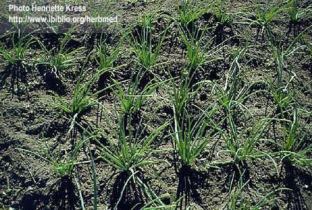

|
ECONOMICALLY
IMPORTANT PLANTS OF INDIA |
| Under-utilized Food and Fodder species and their wild relatives | Contributed by Ms.M.L Annapurna And Dr. Dhanapal, UAS, Bangalore |
Allium ascalonicum Linn .,
----- Taxonomic Details

----- Correct Name
----- Classification
----- Synonyms
----- Common Names
Other Biological Details
----- Habit and Habitat
----- Diagnostic Features
----- Reproductive Biology
---------- Breeding System
---------- Phenology
---------- Pollinators
---------- Seed Biology
---------- Seed Germination
------ Cultivation
----- Major Pests and Diseases
Economic Potential and Uses
----- Parts Used
----- Uses
----- Harvesting Practices
----- Produce and Products
----- Chemistry
----- Processing Techniques
----- Other uses
----- Economic Potential to the
Country
----- Export Potential
Miscellaneous Information
Literature
DIAGNOSTIC FEATURES
A
hardy, bulbous perennial, flowers greenish white or purplish white; bulbs are
about the size of a nut, white. Clusters
of greenish white or red cloves
occur at the base of its hollow cylindrical leaves.
REPRODUCTIVE BIOLOGY
Breeding System
: These are usually vegetatively propageted and by bulbs, and rarely propagated
by seeds.
Phenology :
These are short duration plants of 2-3 months. Flowering occurs in around 40
days especially at low temperatures of 14°C.
Pollinators:
Seed Biology :
Seed
Germination :
It is propagated both by seeds and by bulbs.
Cultivation:
Shallots can be grown in all types of soil with ph more than 5.6, however well
drained alluvial soils are required. Average temperature of 25-32°C is optimum
during the growing period. Shallots are grown in April-August; January-March
and September-December. Bulk of the plant is planted during October. They are
planted on raised beds in sandy soil of 7 cm apart and 5 cm deep at the rate
of 4 tons /ha. Crop is given a basal dressing of fertilizers 10-15 days after
planting and then at 2 weeks interval until 2 weeks before harvest, with 200
kg of urea/ha on each occasion. The highest yields were obtained with 100 kg
each of nitrogen and phosphorous and 50 kg of potassium.
MAJOR PESTS & DISEASES
A variety of diseases caused by organisms like Altrernaria porri (prple blotch)
and Colletotricum species can be controlled with sprays of Maneb. To control
Spodoptera pests as well as thrips, twice weekly sprays of monocrotophos or
other insecticides are used.
Harvesting Practices
Harvest takes place when 70-80% of the leaves have turned yellow, i.e., 65-70
days after planting in the lowlands. And 80-100 days after planting in the highland
areas. The shallots are pulled by hand after they have obtained a diameter of
at least 0.5-0.6 cm. The outer skin is peeled off and roots are trimmed, after
which they are washed and tied into 1 kg bunches. For dry bulb production shallots
are dried for 5-14 days in the field, covered by plastics if it rains.
Produce and Products
Pickles
Chemistry:
All most same as onions except that shallots are known to
contain more fat and soluble solids, including sugars, than bulb onions.
Allium
ascalonicum- A
Dictionary of the Economic products of India, 1889, George Watt, Vol.I, pp.168-169.
http://www.ibiblio.org/herbmed/pictures/p01/pages/allium-cepa-v-ascalonicum.htm
Sasya
Sahyadri- A CD on Plants of Western Ghats, 2003, K.N. Ganeshaiah.